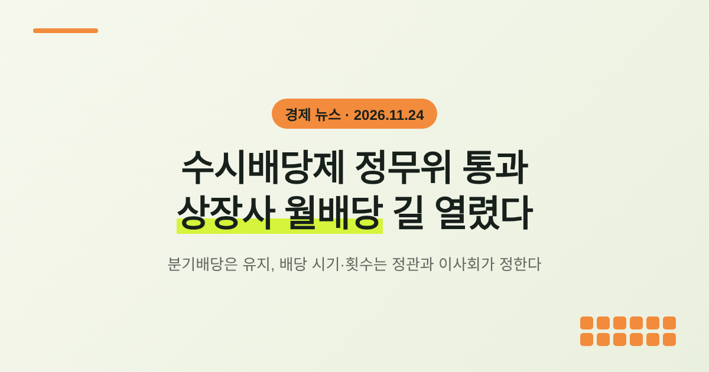
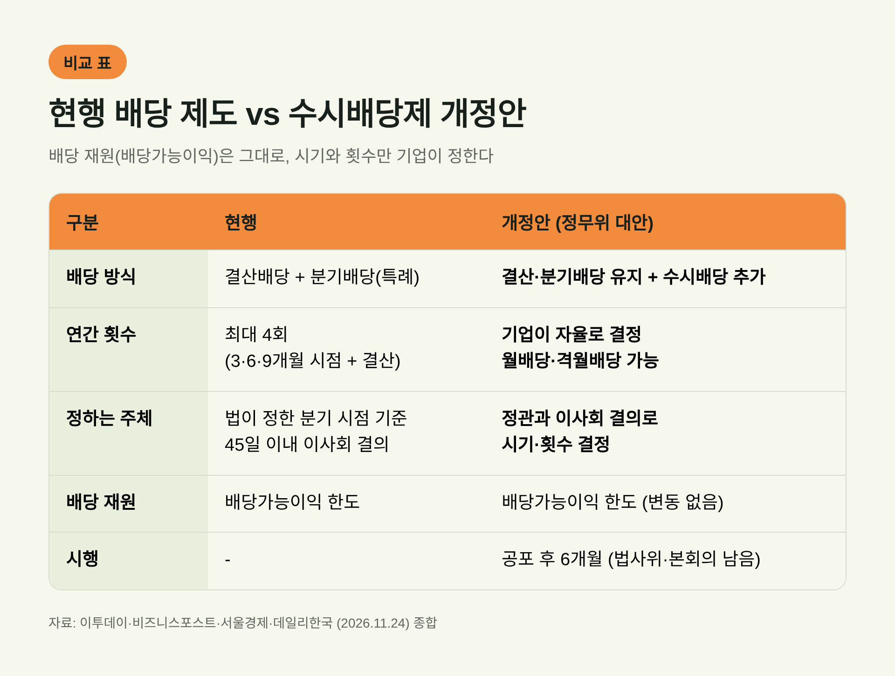
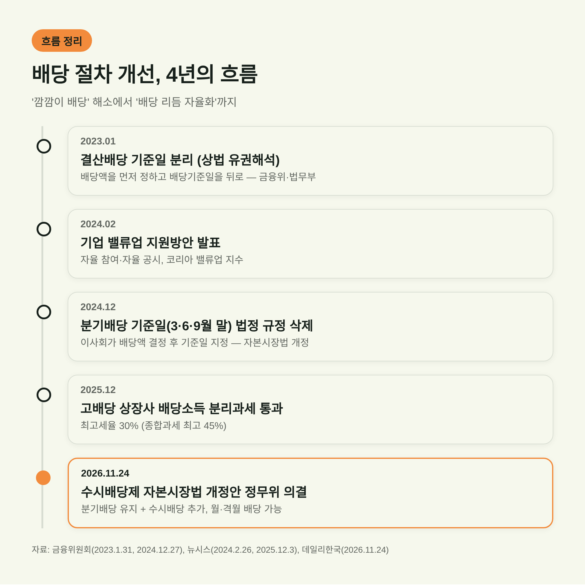
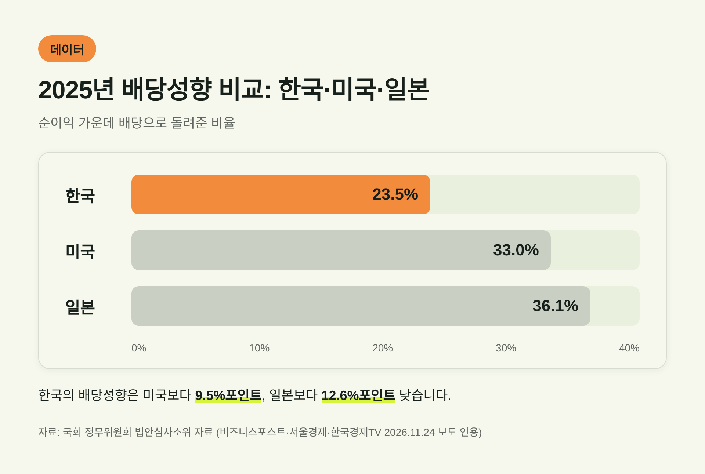
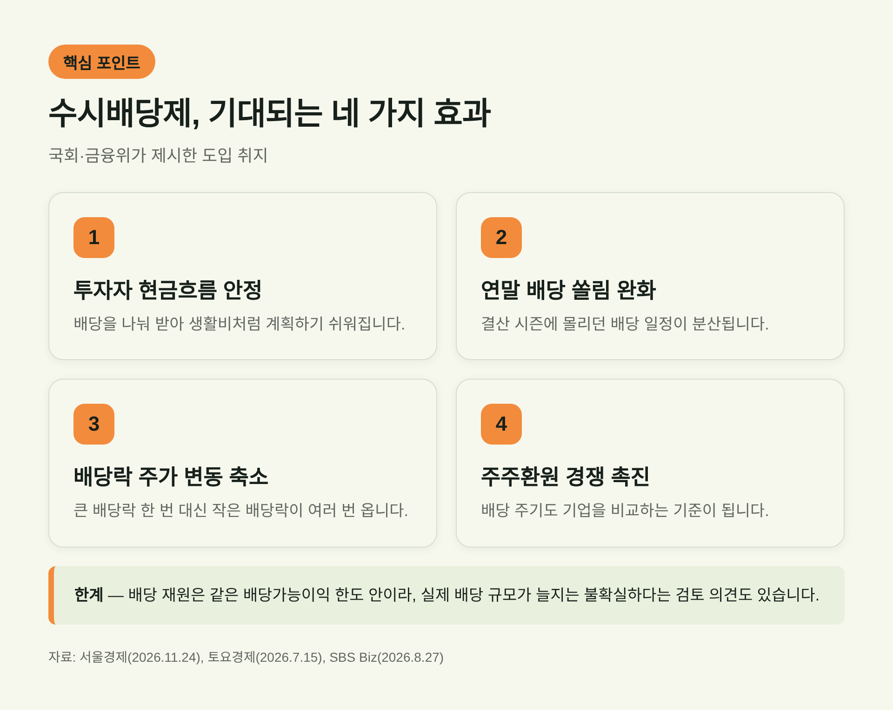
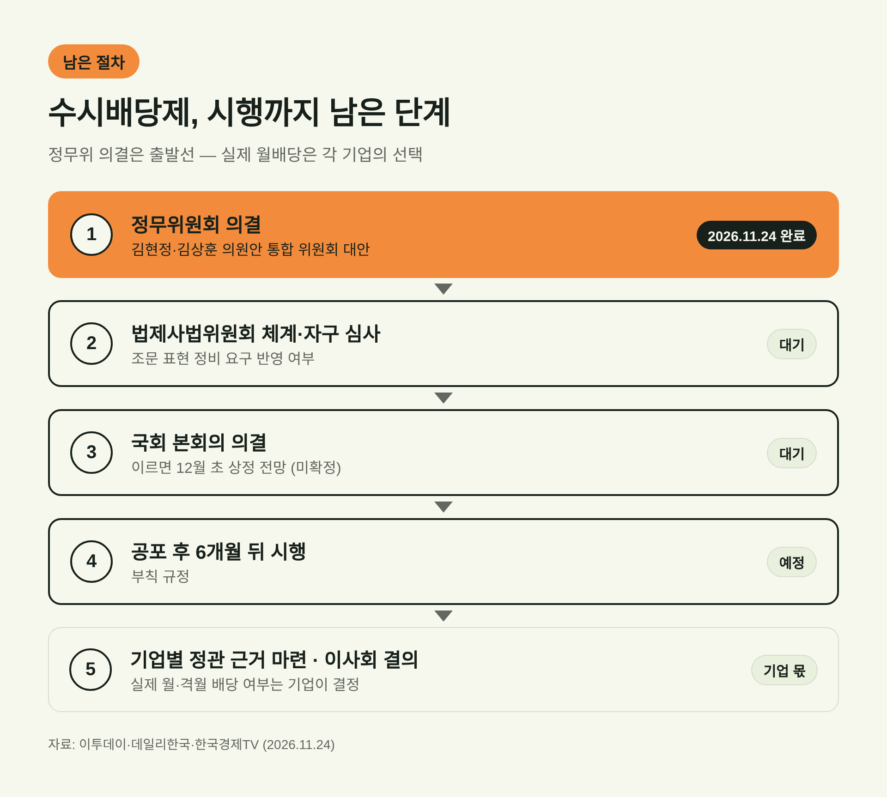

수시배당제 정무위 통과, 상장사 월배당 길 열렸다…무엇이 달라지나

오늘은 국회 정무위원회를 통과한 '수시배당제' 자본시장법 개정안을 정리해 보겠습니다. 핵심은 간단합니다. 상장사가 배당을 언제, 몇 번 할지 스스로 정할 수 있게 됩니다.
3줄 요약
- 국회 정무위원회가 2026년 11월 24일 전체회의에서 수시배당제를 담은 자본시장법 개정안을 의결했습니다.
- 기존 분기배당은 그대로 두고, 정관과 이사회 결의로 배당 시기·횟수를 정하는 수시배당을 더했습니다. 월배당·격월배당이 가능해집니다.
- 법제사법위원회와 본회의를 남겨두고 있으며, 통과되면 공포 6개월 뒤부터 시행됩니다.
■ 무슨 일이 있었나
11월 24일 오전, 국회 정무위원회가 전체회의에서 자본시장법 개정안을 의결했습니다. 김현정 더불어민주당 의원과 김상훈 국민의힘 의원이 각각 낸 법안을 하나로 묶은 위원회 대안입니다. 여야 의원안을 합친 만큼, 도입 방향 자체를 두고는 이견이 크지 않았습니다.
처리 과정이 순탄하지만은 않았습니다. 여야는 11월 17일 법안심사제1소위원회에서 도입 방향에 합의했습니다. 그런데 19일 회의가 민주유공자법 처리를 둘러싼 충돌로 열리지 못했습니다. 결국 24일 소위와 전체회의를 잇달아 열어 처리를 마쳤습니다(이투데이, 데일리한국).
개정안의 뼈대는 세 가지입니다.
- 상장사는 배당가능이익 한도 안에서 배당 시기와 횟수를 정관과 이사회 결의로 정합니다.
- 기존 분기배당 규정은 유지합니다. 수시배당은 대체가 아니라 추가입니다.
- 시행은 공포 후 6개월이 지난 날부터입니다.
법안심사제1소위원장인 박상혁 민주당 간사는 기존 분기배당을 유지하면서 수시배당을 더하는 구조라고 설명했습니다. 월배당을 강제하는 법도 아닙니다. 기업이 고르는 방식입니다(한국경제TV).

■ 지금 제도와 무엇이 다른가
현행 자본시장법은 분기배당을 '특례'로 허용합니다. 사업연도 시작일부터 3개월, 6개월, 9개월이 지난 시점을 기준으로, 45일 이내 이사회 결의를 거쳐 배당할 수 있습니다. 여기에 결산배당을 더하면 한 해 최대 4번입니다(비즈니스포스트, 서울경제).
말이 4번이지, 실제로는 훨씬 적습니다. 국내 기업 배당은 대개 1년에 한두 번에 그칩니다. 분기배당도 금융지주회사 중심으로 제한적으로만 이뤄져 왔습니다(한국세정신문). 정무위 소위 자료에 따르면 2025년 중간·분기배당을 한 상장사는 158곳, 전체의 18.7%였습니다(서울경제).
예전엔 배당 달력이 법에 적혀 있었습니다. 앞으로는 회사가 달력을 짭니다. 미국·영국 기업처럼 매달 혹은 두 달에 한 번 배당하는 회사가 나올 수 있다는 뜻입니다.
다만 오해하기 쉬운 지점이 있습니다. 배당할 수 있는 돈의 총량은 그대로라는 점입니다. 1년 치를 한 번에 주든, 열두 번에 나눠 주든 재원은 같은 배당가능이익 안에서 나옵니다(이투데이, 데일리한국).
두 원안은 결이 조금 달랐습니다. 김상훈안은 분기배당 대신 이사회가 정하는 때에 자유롭게 배당하는 방식이었습니다. 김현정안은 분기 지급과 월 지급 중 하나를 고르게 하고, 매월 말일 후 15일 이내 결의·결의 후 1개월 이내 지급처럼 기한을 구체적으로 정했습니다(MTN, 이투데이). 대안은 분기배당을 남기고 수시배당을 얹는 쪽으로 정리됐습니다. 이미 분기배당을 하는 기업의 혼란과, 정관을 고치지 못한 기업이 위법 상태가 되는 일을 막기 위해서입니다(위키리크스한국).
■ 배당 절차 개선, 몇 년에 걸친 흐름
이번 개정은 갑자기 나온 것이 아닙니다. 몇 년째 이어진 '배당 절차 바로잡기'의 연장선에 있습니다.
출발점은 이른바 '깜깜이 배당'이었습니다. 투자자는 연말에 주식을 사서 주주가 되지만, 배당금은 이듬해 봄 주주총회에서야 정해졌습니다. 얼마를 받을지 모르고 투자하는 구조였습니다.

- 2023년 1월 — 금융위원회와 법무부가 상법 유권해석으로 결산배당의 의결권 기준일과 배당기준일을 나눌 수 있게 했습니다. 배당액을 먼저 정하고 기준일을 뒤로 잡는 방식입니다(금융위원회).
- 2024년 2월 — 금융위가 '기업 밸류업 지원방안'을 내놨습니다. 자율 참여와 자율 공시가 골자였습니다(뉴시스).
- 2024년 12월 — 분기배당 기준일(3·6·9월 말)을 법에서 지우는 자본시장법 개정안이 본회의를 통과했습니다. 이사회가 배당액을 정한 뒤 기준일을 지정할 수 있게 됐습니다(금융위원회).
- 2026년 7월 — 금융위가 업무보고에서 수시배당 허용을 공식 과제로 올렸습니다(토요경제).
성과와 한계가 함께 보입니다. 금융위에 따르면 상장사 1,008곳(약 42%)이 개선된 절차를 정관에 반영했습니다. 하지만 2023년 결산배당 때 실제로 적용한 곳은 배당기업 321곳 중 109곳, 약 34%였습니다(금융위원회 2024년 12월 보도참고). 제도를 열어두는 것과 기업이 실제로 움직이는 것 사이에는 늘 간격이 있습니다.
■ 왜 중요한가: 코리아 디스카운트와 배당
정부와 국회가 배당 제도를 거듭 손보는 이유는 하나로 모입니다. 한국 증시가 실적에 비해 낮게 평가받는다는 '코리아 디스카운트'입니다.
숫자가 그 배경을 보여줍니다. 정무위 법안심사소위 자료 기준 2025년 배당성향은 한국 23.5%, 미국 33.0%, 일본 36.1%였습니다(비즈니스포스트, 서울경제, 한국경제TV). 번 돈 가운데 주주에게 돌려주는 몫이 주요국보다 10%포인트 안팎 낮은 셈입니다. 2026년 6월 초 기준으로는 코스피·코스닥 2,556개사 중 1,368곳(53.5%)이 주가순자산비율(PBR) 1배 미만이었습니다(MTN).

배당을 자주 주는 기업이 더 많이 주는 경향도 관찰됩니다. 2023년 코스피에서 분기배당 기업의 평균 배당성향은 46.6%로, 분기배당을 하지 않는 배당기업(29.3%)보다 높았습니다(금융위원회). 물론 이것이 '자주 주면 더 주게 된다'는 인과를 증명하지는 않습니다. 원래 현금이 넉넉한 기업이 분기배당을 택했을 가능성도 큽니다.
■ 투자자와 기업에는 무엇이 달라지나
발의 의원들이 내세운 논리는 '월급 같은 배당'입니다.
김상훈 의원은 고령층 금융자산이 예금에 몰려 있다는 점을 짚었습니다. 75세 이상 총자산에서 금융투자자산이 차지하는 비중은 0.2%에 불과하다는 것입니다(한국경제TV). 김현정 의원은 "월 배당 도입을 통해 투자자의 소득 안정성을 높이고, 가계 자산이 자본시장으로 유입되는 선순환 구조를 만들어야 한다"고 밝혔습니다(한국세정신문).
수요는 이미 확인되고 있습니다. 매달 분배금을 주는 커버드콜 ETF의 순자산은 2026년 8월 말 기준 2025년 말의 약 2배로 불었습니다(데일리안). 지금까지 국내 투자자가 '월 현금흐름'을 얻으려면 ETF나 해외 배당주를 찾아야 했습니다. 수시배당이 자리 잡으면 국내 개별 상장사도 그 수요의 선택지가 될 수 있습니다.

기대효과는 크게 넷으로 정리됩니다.
- 현금흐름 안정 — 배당을 쪼개 받으면 생활비처럼 계획하기 쉬워집니다(금융위원회 업무보고, 토요경제).
- 연말 쏠림 완화 — 12월·3월에 몰리던 배당 일정이 분산됩니다(토요경제).
- 배당락 충격 축소 — 한 번에 큰 배당이 빠지는 대신 작은 배당락이 여러 번 생깁니다(서울경제).
- 주주환원 경쟁 — 배당 주기 자체가 기업을 비교하는 기준이 될 수 있습니다(서울경제).
기업 입장에서는 선택지가 넓어집니다. 분기 단위로 묶여 있던 일정을 사업 주기나 현금 사정에 맞춰 짤 수 있습니다. 금융위원회는 이를 두고 유연한 주주환원 정책과 다양한 투자 전략이 가능해진다고 평가했습니다(SBS Biz).
■ 쟁점: 실효성, 기업 부담, 세제와의 연결
좋은 점만 있지는 않습니다.
첫째, 실효성입니다. 곽현준 정무위 수석전문위원은 검토 과정에서, 배당 재원이 같은 배당가능이익 한도 안에 있는 만큼 실제로 배당 규모나 횟수가 늘지는 불확실하다고 짚었습니다(SBS Biz). 선택지를 넓히는 법이라 실질적인 배당 증대 효과는 제한적일 수 있다는 평가도 나옵니다(서울경제). 문을 열어준 것이지, 문을 지나가게 한 것은 아닙니다.
둘째, 기업 부담입니다. 한국상장회사협의회는 과도한 배당 압박을 경계하고, 이사회의 경영 판단 독립성을 존중해 달라고 요구했습니다(SBS Biz). 배당을 자주 하면 그만큼 이사회 결의와 공시, 주주 확정 같은 절차도 잦아집니다. 현금을 꾸준히 버는 업종에는 유리하지만, 실적 변동이 큰 기업에는 매달 배당이 오히려 짐이 될 수 있습니다. 분기배당이 그동안 금융지주 중심이었다는 점을 보면, 월배당 역시 처음에는 일부 업종·대형사에 몰릴 가능성을 배제하기 어렵습니다. 다만 이런 '쏠림'을 수치로 전망한 공식 분석은 아직 확인되지 않았습니다.
셋째, 세제와의 연결입니다. 2025년 12월 2일 국회는 고배당 상장기업의 배당소득을 분리과세하는 법안을 통과시켰습니다. 세율은 2,000만원 이하 14%, 3억원 이하 20%, 50억원 이하 25%, 50억원 초과 30%입니다. 종합과세 최고세율 45%보다 낮습니다(뉴시스). 대상은 배당성향 40% 이상이거나, 25% 이상이면서 배당을 전년보다 10% 이상 늘린 기업이며 2026년 배당분부터 적용됩니다(CEO스코어데일리). 수시배당이 '자주 주는 길'이라면 분리과세는 '많이 주는 유인'에 가깝습니다. 두 장치가 함께 작동해야 배당 확대 효과가 커질 텐데, 월배당을 할 때 연간 배당성향 요건을 어떻게 따지는지 등 구체적 연계 방안은 아직 확인되지 않았습니다.
넷째, 조문 정비입니다. 송언석 국민의힘 의원은 분기배당 시기를 규정한 조문 표현이 "일반인의 국어 상식"으로 보기에 어색하다며 손보자고 제안했습니다. 유동수 정무위원장은 간사들과 상의해 확정하겠다고 답했습니다(이투데이).
■ 남은 절차와 시행 시기
정무위 의결은 출발선입니다. 법제사법위원회의 체계·자구 심사와 본회의 의결이 남아 있습니다. 이르면 12월 초 본회의에 오를 수 있다는 전망이 나오지만 일정이 확정된 것은 아닙니다(한국경제TV).

시행은 공포 후 6개월 뒤입니다. 연내 본회의를 통과해 곧바로 공포된다고 가정하면, 2027년 상반기 중 시행이 가능해집니다. 이는 일정을 단순 계산한 추정입니다. 법이 시행되더라도 기업이 실제로 수시배당을 하려면 정관 근거를 갖추고 이사회 결의를 거쳐야 합니다. 2027년 정기 주주총회 시즌에 정관을 바꾸는 기업이 얼마나 나오는지가 첫 번째 시험대가 될 것입니다.
같은 날 정무위에서는 다른 금융 법안도 다뤄졌습니다. 2011년 저축은행 부실 사태 때 만든 상호저축은행 구조조정 특별계정의 운영기간을 2027년 말까지 1년 늘리는 예금자보호법 개정안이 의결됐습니다. 지원 규모가 당초 예상 15조원에서 27조2000억원으로 불어나, 연말까지 최대 1조6000억원의 결손이 남을 전망입니다(데일리한국, 이투데이). 반면 해킹 등 침해사고를 낸 금융사에 매출액의 3% 이하 과징금을 매기는 전자금융거래법 개정안은 면책 조항과 과징금 산정 기준을 두고 여야 이견이 남아 소위에서 처리되지 못했습니다. 12월 둘째 주 재논의가 잠정 거론됩니다(뉴스핌, 서플).
정리하면 이렇습니다. 수시배당제는 배당의 '총량'이 아니라 '리듬'을 바꾸는 제도입니다. 연 1~2회에 몰려 있던 배당이 월급처럼 흩어질 수 있는 길이 생겼습니다. 그 길을 실제로 걷는 기업이 얼마나 될지는 법이 아니라 각 회사 이사회의 선택에 달려 있습니다.
"배당 달력을 회사가 짜는 시대" — 제도는 준비됐고, 이제 기업의 답을 기다릴 차례입니다.
월배당이 한국 증시의 체질을 바꿀 수 있겠냐고 물으신다면, 출발점으로는 충분하지만 그것만으로는 모자란다고 답하겠습니다.
본 글은 정보 제공 목적으로 작성되었으며, 특정 종목이나 상품에 대한 투자 권유가 아닙니다. 투자 판단과 그 결과에 대한 책임은 투자자 본인에게 있습니다.
참고자료
- 데일리한국, 「정무위, 수시배당제 도입 법안 의결…상장사 월배당 길 열린다」 (2026-11-24) — https://daily.hankooki.com/news/articleView.html?idxno=1428367
- 이투데이, 「상장사 '월배당' 길 열린다…수시배당제, 국회 정무위 통과」 (2026-11-24) — https://www.etoday.co.kr/news/view/2652150
- 비즈니스포스트, 「국회 정무위 '수시배당 도입' 자본시장법 개정안 의결」 (2026-11-24) — https://www.businesspost.co.kr/BP?command=article_view&num=452781
- 서울경제, 「月배당 시대 열린다…정무위 '수시배당제' 法 의결」 (2026-11-24) — https://m.sedaily.com/article/20118422
- 한국경제TV, 「배당도 월급처럼…자본시장법 개정안 상임위 통과」 (2026-11-24) — https://www.wowtv.co.kr/NewsCenter/News/Read?articleId=A202611240056
- 파이낸셜뉴스, 「정무위, '월 배당' 등 가능한 자본시장법 개정안 의결」 (2026-11-24) — https://www.fnnews.com/news/202611241041288563
- 아시아경제, 「배당도 월급처럼 받는다…'수시배당제' 국회 정무위 통과」 (2026-11-24) — https://view.asiae.co.kr/article/2026112410431741514
- 위키리크스한국, 「'월·격월' 배당 가능해지나…수시배당제, 정무위 문턱 넘었다」 (2026-11-24) — https://www.wikileaks-kr.org/news/articleView.html?idxno=195166
- 서플(SBS Biz), 「해킹 금융사에 매출 3% 과징금…여야 이견에 처리 연기」 (2026-11-24) — https://supple.kr/news/cmwufpiuru6xikwp8vp11tsvb
- 뉴스핌, 「국회 정무위, 해킹 금융사 '매출 3% 과징금' 법안 결론 못 내…내달 재논의」 (2026-11-24) — https://www.newspim.com/news/view/20261124001219
- SBS Biz, 「월급처럼 꼬박꼬박 배당?…수시배당 논의 급물살?」 (2026-08-27) — https://biz.sbs.co.kr/amp/article/20000331094
- 토요경제, 「금융위, 기업 '수시배당' 허용 추진…내년 상반기 법 개정」 (2026-07-15) — https://sateconomy.co.kr/news/view/1065590005380076
- MTN, 「저PBR 기업은 '반성문' 써라?...앞으론 월급처럼 배당 받는다」 (2026-06-23) — https://news.mtn.co.kr/news-detail/2026061801490555533
- 한국세정신문, 「김현정 의원 "상장사 월배당 허용"」 (2026-06-08) — https://taxtimes.co.kr/mobile/article.html?no=275447
- 금융위원회, 「배당절차 및 기업공시 제도개선을 위한 자본시장법 개정 (국회 본회의 통과)」 (2024-12-27) — https://www.fsc.go.kr/no010101/83741
- Financial Services Commission, 「Authorities Plan to Improve Rules Regarding Dividend in Line with Global Standards」 (2023-01-31) — https://fsc.go.kr/eng/pr010101/79381
- 뉴시스, 「배당소득 분리과세 최고 세율 30%·법인세 1%p 인상 법안 국회 통과(종합)」 (2025-12-03) — https://www.newsis.com/view/NISX20251202_0003425833
- CEO스코어데일리, 「내년부터 연 2천만원 넘는 고배당 상장기업 배당소득세는 분리과세 세율 적용」 (2025-12-05) — https://ceoscoredaily.com/page/view/2025120415155575922
- 뉴시스, 「금융위 부위원장 "日보다 많은 인센티브…페널티 없다"」 (2024-02-26) — https://www.newsis.com/view/NISX20240226_0002639371
- 데일리안, 「"부동산 대신 월배당"…커버드콜 ETF, 8개월 만에 몸집 2배」 (2026-09-30) — https://www.dailian.co.kr/news/view/1696299/